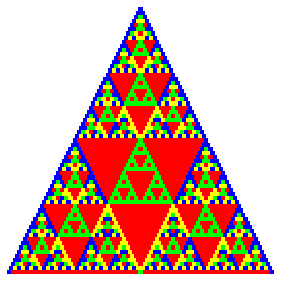

|  |
Purpose To see how variations on Pascal's triangle generate fractals, to use these ideas to illuminate some concepts in abstract mathematics
Materials Pascal's triangle templates, pencil, PascalTriangle software
Conclusion Pascal's triangle revelas many fractals in adition to the familiar Sierpinski gasket. In addition, it is a source of illustrations of some basic constructions in group theory.
References
| The idea of using constructing Pascal's triangle for finite groups, in addition to the familiar cyclic groups Zn, is presented in "The PascGalois project: visualizing abstract algebra," Focus vol 22 (March 2002), 4-5, by Michael Bardzell and Kathleen Shannon. The website |
| http://faculty.salisbury.edu/~kmshannon/pascal/ |
| contains many examples. |
The idea of constructing Pascal's triangles for other polynomials is presented as an interesting collection of puzzles in "Variations on a theme from Pascal's triangle," College Mathematics Journal vol 34 (2003), 216-223.